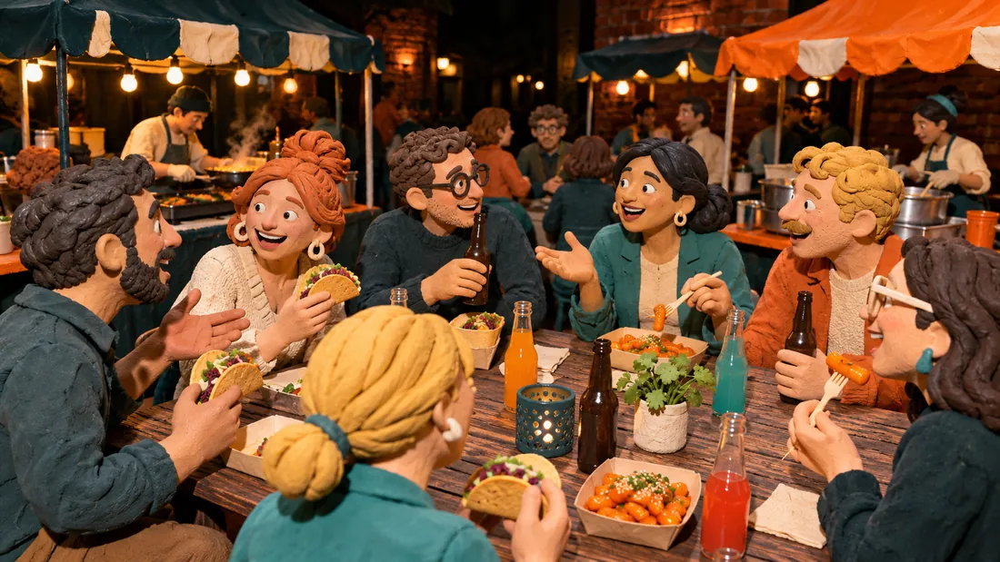

Tischwechsel / Story
Ein anderer Tisch.
Ein anderes Gespräch.
Tischwechsel beginnt mit einer einfachen Idee: Zusammen essen schafft Raum für Gespräche, die im Arbeitsalltag oft zu kurz kommen.
Wie die Idee entstanden ist
Im Büro sitzen wir häufig mit denselben Menschen zusammen. Wir sprechen über Termine, Aufgaben und den nächsten Abgabetag. Daraus entstand die Idee für einen Feierabendmarkt, an dem ein Team sich in einem anderen Rhythmus begegnet. Ein warmer Taco in der Hand und eine offene Theke geben den ersten Gesprächsanlass ganz von selbst.
Aus dieser Idee wurde Tischwechsel. Der Name ist eine Einladung, sich einen anderen Platz zu suchen, ein unbekanntes Gericht zu probieren und eine neue Unterhaltung anzufangen. Die lange Tafel verbindet die verschiedenen Stände zu einem gemeinsamen Abend.

Vier Theken mit Charakter
Mexiko und Südkorea bilden den kulinarischen Rahmen. Die Auswahl reicht von herzhaften Tortillas und warmem Mais bis zu würzigen Reiskuchen und süßen Pfannkuchen. Jede Theke hat eine eigene Zubereitung und ein eigenes Tempo. Die Arbeit bleibt sichtbar: Teig wird gewendet, Mais geschöpft und Sauce gerührt.
An jeder Theke beginnt ein anderes Gespräch: Was kommt in die Füllung? Wie scharf darf die Sauce sein? Welches Gericht teilen wir als Nächstes? Die offenen Küchen machen aus einer schnellen Bestellung einen kleinen gemeinsamen Moment. Niemand muss die Gerichte schon kennen, um mitzuessen und mitzureden.
Wer den Abend zusammenbringt
Hinter dem Veranstaltungskonzept stehen drei Aufgabenbereiche: Die Marktorganisation stimmt Ablauf und Treffpunkte ab. Die vier Küchenstationen kümmern sich um Zubereitung und Ausgabe. Die Gästebetreuung hilft den Teams, sich zwischen Theken und Tafel zu orientieren. So bleibt Raum für das, worum es bei Tischwechsel geht: gemeinsam essen und miteinander ins Gespräch kommen.
Euer Team gestaltet den Abend selbst. Ihr entscheidet, wann ihr gemeinsam esst und wann ihr euch auf Entdeckungsrunde begebt. Es gibt keinen festen Sitzplan und kein verpflichtendes Teamspiel. Ein anderer Platz an der langen Tafel reicht oft schon für eine neue Unterhaltung.
Hamburger Feierabend, neue Lieblingsgerichte
Der Oberhafen gibt der Idee ihren Rahmen: Backstein, warmes Licht und eine lange Tafel zwischen den Ständen. Mexiko und Südkorea bringen unterschiedliche Aromen an denselben Tisch. Ob ihr zu viert kommt oder mit mehreren Abteilungen: Ihr müsst euch nicht auf ein einziges Lieblingsgericht einigen. Nur auf einen gemeinsamen Feierabend. Tischwechsel ist ein Studienprojekt; der dargestellte Aufbau und das Organisationsteam gehören zum erfundenen Veranstaltungskonzept.
17. September 2027 · Hamburg
Kommt zusammen.
Bringt euer Team mit. Den Tisch teilen wir.
Gruppentickets ansehenSo findet ihr den Oberhafen